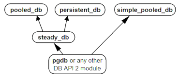
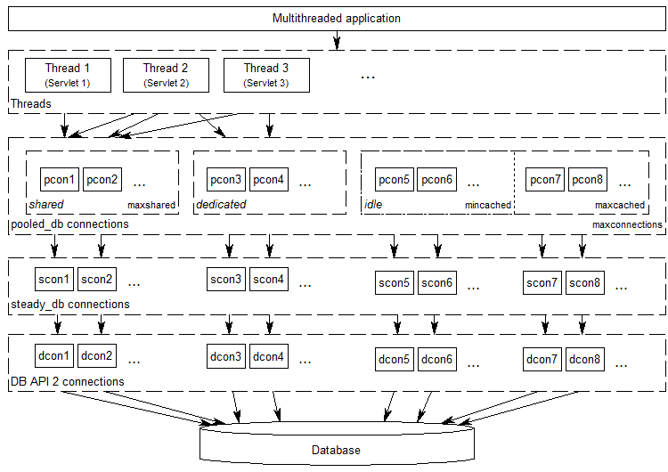

DBUtils User's Guide
- Version:
- 3.1.2
- Translations:
English | German
Synopsis
DBUtils is a suite of Python modules allowing to connect in a safe and efficient way between a threaded Python application and a database.
DBUtils has been originally written particularly for Webware for Python as the application and PyGreSQL as the adapter to a PostgreSQL database, but it can meanwhile be used for any other Python application and DB-API 2 conformant database adapter.
Modules
The DBUtils suite is realized as a Python package containing two subsets of modules, one for use with arbitrary DB-API 2 modules, the other one for use with the classic PyGreSQL module.
Universal DB-API 2 variant |
|
|---|---|
steady_db |
Hardened DB-API 2 connections |
pooled_db |
Pooling for DB-API 2 connections |
persistent_db |
Persistent DB-API 2 connections |
simple_pooled_db |
Simple pooling for DB-API 2 |
Classic PyGreSQL variant |
|
|---|---|
steady_pg |
Hardened classic PyGreSQL connections |
pooled_pg |
Pooling for classic PyGreSQL connections |
persistent_pg |
Persistent classic PyGreSQL connections |
simple_pooled_pg |
Simple pooling for classic PyGreSQL |
The dependencies of the modules in the universal DB-API 2 variant are as indicated in the following diagram:
The dependencies of the modules in the classic PyGreSQL variant are similar:

Download
You can download the actual version of DBUtils from the Python Package Index at:
https://pypi.python.org/pypi/DBUtils
The source code repository can be found here on GitHub:
https://github.com/WebwareForPython/DBUtils
Installation
Installation
The package can be installed in the usual way:
python setup.py install
It is even easier to download and install the package in one go using pip:
pip install DBUtils
Requirements
DBUtils supports Python versions 3.7 to 3.13.
The modules in the classic PyGreSQL variant need PyGreSQL version 4.0 or above, while the modules in the universal DB-API 2 variant run with any Python DB-API 2 compliant database interface module.
Functionality
This section will refer to the names in the DB-API 2 variant only, but the same applies to the classic PyGreSQL variant.
DBUtils installs itself as a package dbutils containing all the modules that are described in this guide. Each of these modules contains essentially one class with an analogous name that provides the corresponding functionality. For instance, the module dbutils.pooled_db contains the class PooledDB.
SimplePooledDB (simple_pooled_db)
The class SimplePooledDB in dbutils.simple_pooled_db is a very basic reference implementation of a pooled database connection. It is much less sophisticated than the regular pooled_db module and is particularly lacking the failover functionality. dbutils.simple_pooled_db is essentially the same as the MiscUtils.DBPool module that is part of Webware for Python. You should consider it a demonstration of concept rather than something that should go into production.
SteadyDBConnection (steady_db)
The class SteadyDBConnection in the module dbutils.steady_db implements "hardened" connections to a database, based on ordinary connections made by any DB-API 2 database module. A "hardened" connection will transparently reopen upon access when it has been closed or the database connection has been lost or when it is used more often than an optional usage limit.
A typical example where this is needed is when the database has been restarted while your application is still running and has open connections to the database, or when your application accesses a remote database in a network that is separated by a firewall and the firewall has been restarted and lost its state.
Usually, you will not use the steady_db module directly; it merely serves as a basis for the next two modules, persistent_db and Pooled_db.
PersistentDB (persistent_db)
The class PersistentDB in the module dbutils.persistent_db implements steady, thread-affine, persistent connections to a database, using any DB-API 2 database module. "Thread-affine" and "persistent" means that the individual database connections stay assigned to the respective threads and will not be closed during the lifetime of the threads.
The following diagram shows the connection layers involved when you are using persistent_db connections:

Whenever a thread opens a database connection for the first time, a new connection to the database will be opened that will be used from now on for this specific thread. When the thread closes the database connection, it will still be kept open so that the next time when a connection is requested by the same thread, this already opened connection can be used. The connection will be closed automatically when the thread dies.
In short: persistent_db tries to recycle database connections to increase the overall database access performance of your threaded application, but it makes sure that connections are never shared between threads.
Therefore, persistent_db will work perfectly even if the underlying DB-API module is not thread-safe at the connection level, and it will avoid problems when other threads change the database session or perform transactions spreading over more than one SQL command.
PooledDB (pooled_db)
The class PooledDB in the module dbutils.pooled_db implements a pool of steady, thread-safe cached connections to a database which are transparently reused, using any DB-API 2 database module.
The following diagram shows the connection layers involved when you are using pooled_db connections:
As the diagram indicates, pooled_db can share opened database connections between different threads. This will happen by default if you set up the connection pool with a positive value of maxshared and the underlying DB-API 2 is thread-safe at the connection level, but you can also request dedicated database connections that will not be shared between threads. Besides the pool of shared connections, you can also set up a pool of at least mincached and at the most maxcached idle connections that will be used whenever a thread is requesting a dedicated database connection or the pool of shared connections is not yet full. When a thread closes a connection that is not shared anymore, it is returned back to the pool of idle connections so that it can be recycled again.
If the underlying DB-API module is not thread-safe, thread locks will be used to ensure that the pooled_db connections are thread-safe. So you don't need to worry about that, but you should be careful to use dedicated connections whenever you change the database session or perform transactions spreading over more than one SQL command.
Which one to use?
Both persistent_db and pooled_db serve the same purpose to improve the database access performance by recycling database connections, while preserving stability even if database connection will be disrupted.
So which of these two modules should you use? From the above explanations it is clear that persistent_db will make more sense if your application keeps a constant number of threads which frequently use the database. In this case, you will always have the same amount of open database connections. However, if your application frequently starts and ends threads, then it will be better to use pooled_db. The latter will also allow more fine-tuning, particularly if you are using a thread-safe DB-API 2 module.
Since the interface of both modules is similar, you can easily switch from one to the other and check which one will suit better.
Usage
The usage of all the modules is similar, but there are also some differences in the initialization between the "Pooled" and "Persistent" variants and also between the universal DB-API 2 and the classic PyGreSQL variants.
We will cover here only the persistent_db module and the more complex pooled_db module. For the details of the other modules, have a look at their module docstrings. Using the Python interpreter console, you can display the documentation of the pooled_db module as follows (this works analogously for the other modules):
help(pooled_db)
PersistentDB (persistent_db)
In order to make use of the persistent_db module, you first need to set up a generator for your kind of database connections by creating an instance of persistent_db, passing the following parameters:
creator: either an arbitrary function returning new DB-API 2 connection objects or a DB-API 2 compliant database module
maxusage: the maximum number of reuses of a single connection (the default of 0 or None means unlimited reuse)
Whenever the limit is reached, the connection will be reset.
setsession: an optional list of SQL commands that may serve to prepare the session, e.g. ["set datestyle to german", ...]
failures: an optional exception class or a tuple of exception classes for which the connection failover mechanism shall be applied, if the default (OperationalError, InterfaceError, InternalError) is not adequate for the used database module
ping: an optional flag controlling when connections are checked with the ping() method if such a method is available (0 = None = never, 1 = default = whenever it is requested, 2 = when a cursor is created, 4 = when a query is executed, 7 = always, and all other bit combinations of these values)
closeable: if this is set to true, then closing connections will be allowed, but by default this will be silently ignored
threadlocal: an optional class for representing thread-local data that will be used instead of our Python implementation (threading.local is faster, but cannot be used in all cases)
The creator function or the connect function of the DB-API 2 compliant database module specified as the creator will receive any additional parameters such as the host, database, user, password etc. You may choose some or all of these parameters in your own creator function, allowing for sophisticated failover and load-balancing mechanisms.
For instance, if you are using pgdb as your DB-API 2 database module and want every connection to your local database mydb to be reused 1000 times:
import pgdb # import used DB-API 2 module from dbutils.persistent_db import PersistentDB persist = PersistentDB(pgdb, 1000, database='mydb')
Once you have set up the generator with these parameters, you can request database connections of that kind:
db = persist.connection()
You can use these connections just as if they were ordinary DB-API 2 connections. Actually what you get is the hardened steady_db version of the underlying DB-API 2 connection.
Closing a persistent connection with db.close() will be silently ignored since it would be reopened at the next usage anyway and contrary to the intent of having persistent connections. Instead, the connection will be automatically closed when the thread dies. You can change this behavior by setting the closeable parameter.
By setting the threadlocal parameter to threading.local, getting connections may become a bit faster, but this may not work in all environments (for instance, mod_wsgi is known to cause problems since it clears the threading.local data between requests).
PooledDB (pooled_db)
In order to make use of the pooled_db module, you first need to set up the database connection pool by creating an instance of pooled_db, passing the following parameters:
creator: either an arbitrary function returning new DB-API 2 connection objects or a DB-API 2 compliant database module
mincached : the initial number of idle connections in the pool (the default of 0 means no connections are made at startup)
maxcached: the maximum number of idle connections in the pool (the default value of 0 or None means unlimited pool size)
maxshared: maximum number of shared connections allowed (the default value of 0 or None means all connections are dedicated)
When this maximum number is reached, connections are shared if they have been requested as shareable.
maxconnections: maximum number of connections generally allowed (the default value of 0 or None means any number of connections)
blocking: determines behavior when exceeding the maximum
If this is set to true, block and wait until the number of connections decreases, but by default an error will be reported.
maxusage: maximum number of reuses of a single connection (the default of 0 or None means unlimited reuse)
When this maximum usage number of the connection is reached, the connection is automatically reset (closed and reopened).
setsession: an optional list of SQL commands that may serve to prepare the session, e.g. ["set datestyle to german", ...]
reset: how connections should be reset when returned to the pool (False or None to rollback transactions started with begin(), the default value True always issues a rollback for safety's sake)
failures: an optional exception class or a tuple of exception classes for which the connection failover mechanism shall be applied, if the default (OperationalError, InterfaceError, InternalError) is not adequate for the used database module
ping: an optional flag controlling when connections are checked with the ping() method if such a method is available (0 = None = never, 1 = default = whenever fetched from the pool, 2 = when a cursor is created, 4 = when a query is executed, 7 = always, and all other bit combinations of these values)
The creator function or the connect function of the DB-API 2 compliant database module specified as the creator will receive any additional parameters such as the host, database, user, password etc. You may choose some or all of these parameters in your own creator function, allowing for sophisticated failover and load-balancing mechanisms.
For instance, if you are using pgdb as your DB-API 2 database module and want a pool of at least five connections to your local database mydb:
import pgdb # import used DB-API 2 module from dbutils.pooled_db import PooledDB pool = PooledDB(pgdb, 5, database='mydb')
Once you have set up the connection pool you can request database connections from that pool:
db = pool.connection()
You can use these connections just as if they were ordinary DB-API 2 connections. Actually what you get is the hardened steady_db version of the underlying DB-API 2 connection.
Please note that the connection may be shared with other threads by default if you set a non-zero maxshared parameter and the DB-API 2 module allows this. If you want to have a dedicated connection, use:
db = pool.connection(shareable=False)
Instead of this, you can also get a dedicated connection as follows:
db = pool.dedicated_connection()
If you don't need it anymore, you should immediately return it to the pool with db.close(). You can get another connection in the same way.
⚠ Warning: In a threaded environment, never do the following:
pool.connection().cursor().execute(...)
This would release the connection too early for reuse which may be fatal if the connections are not thread-safe. Make sure that the connection object stays alive as long as you are using it, like that:
db = pool.connection() cur = db.cursor() cur.execute(...) res = cur.fetchone() cur.close() # or del cur db.close() # or del db
You can also use context managers for simpler code:
with pool.connection() as db:
with db.cursor() as cur:
cur.execute(...)
res = cur.fetchone()
Advanced Usage
Sometimes you may want to prepare connections before they are used by DBUtils, in ways that are not possible by just using the right parameters. For instance, pyodbc may require to configure connections by calling the setencoding() method of the connection. You can do this by passing a modified connect() function to PersistentDB or PooledDB as creator (the first argument), like this:
from pyodbc import connect
from dbutils.pooled_db import PooledDB
def creator():
con = connect(...)
con.setdecoding(...)
return con
creator.dbapi = pyodbc
db_pool = PooledDB(creator, mincached=5)
Notes
If you are using one of the popular object-relational mappers SQLObject or SQLAlchemy, you won't need DBUtils, since they come with their own connection pools. SQLObject 2 (SQL-API) is actually borrowing some code from DBUtils to split the pooling out into a separate layer.
Also note that when you are using a solution like the Apache webserver with mod_python or mod_wsgi, then your Python code will be usually run in the context of the webserver's child processes. So if you are using the pooled_db module, and several of these child processes are running, you will have as much database connection pools. If these processes are running many threads, this may still be a reasonable approach, but if these processes don't spawn more than one worker thread, as in the case of Apache's "prefork" multi-processing module, this approach does not make sense. If you're running such a configuration, you should resort to a middleware for connection pooling that supports multi-processing, such as pgpool or pgbouncer for the PostgreSQL database.
Future
Some ideas for future improvements:
Alternatively to the maximum number of uses of a connection, implement a maximum time to live for connections.
Create modules monitor_db and monitor_pg that will run in a separate thread, monitoring the pool of the idle connections and maybe also the shared connections respectively the thread-affine connections. If a disrupted connection is detected, then it will be reestablished automatically by the monitoring thread. This will be useful in a scenario where a database powering a website is restarted during the night. Without the monitoring thread, the users would experience a slight delay in the next morning, because only then, the disrupted database connections will be detected and the pool will be rebuilt. With the monitoring thread, this will already happen during the night, shortly after the disruption. The monitoring thread could also be configured to generally recreate the connection pool every day shortly before the users arrive.
Optionally log usage, bad connections and exceeding of limits.
Bug reports and feedback
You can transmit bug reports, patches and feedback by creating issues or pull requests on the GitHub project page for DBUtils.
Links
Some links to related and alternative software:
Webware for Python framework
Python DB-API 2
PostgreSQL database
PyGreSQL Python adapter for PostgreSQL
pgpool middleware for PostgreSQL connection pooling
pgbouncer lightweight PostgreSQL connection pooling
SQLObject object-relational mapper
SQLAlchemy object-relational mapper
Credits
- Author:
- Contributions:
DBUtils uses code, input and suggestions made by Ian Bicking, Chuck Esterbrook (Webware for Python), Dan Green (DBTools), Jay Love, Michael Palmer, Tom Schwaller, Geoffrey Talvola, Warren Smith (DbConnectionPool), Ezio Vernacotola, Jehiah Czebotar, Matthew Harriger, Gregory Piñero and Josef van Eenbergen.
Copyright and License
Copyright © 2005-2025 by Christoph Zwerschke. All Rights Reserved.
DBUtils is free and open source software, licensed under the MIT license.